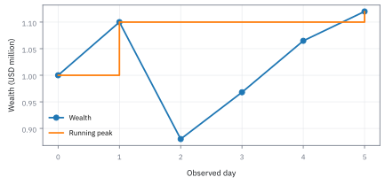
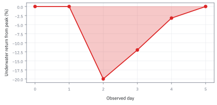
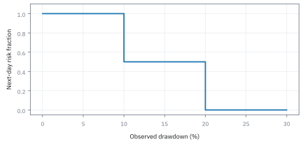
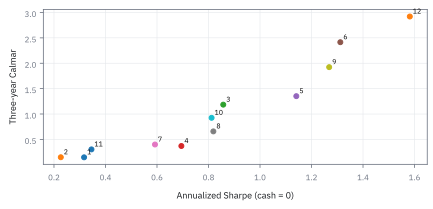
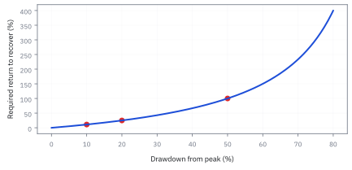

17.6 Drawdown, Calmar, and De-risking Rules
กำไรปลายทางไม่บอกว่าระหว่างทางบัญชีเกือบทนไม่ไหวแค่ไหน
บัญชีทุน \$1,000,000 เคยขึ้นสูงสุด \$1,100,000 แล้วลดเหลือ \$880,000 หากต้องการฟื้นกลับสู่ยอดเดิม ต้องทำกำไรชดเชยกี่เปอร์เซ็นต์
เฉลย: 25% ไม่ใช่ 20%—เพราะ drawdown 20% ทำให้ฐานทุนหดลงเหลือ \$880,000 สูตรฟื้นตัว $R = D / (1 - D)$ ทำให้การตก 20% ต้องฟื้น 25% หากตก 50% จะต้องทำกำไรถึง 100% จึงต้องมีกฎ de-risking ควบคุม
ศัพท์ที่ใช้ในหัวข้อนี้
- drawdown
- สัดส่วนที่มูลค่าปัจจุบันต่ำกว่าจุดสูงสุดก่อนหน้า ใช้วัดความเสียหายที่ผู้ถือบัญชีต้องผ่านระหว่างทาง
- maximum drawdown
- ค่าการตกจากจุดสูงสุดที่มากที่สุดในช่วงสังเกต ใช้สรุปความเสียหายระหว่างทางตามข้อมูลที่วัด
- Calmar ratio
- อัตราเติบโตทบต้นต่อปีหารด้วย maximum drawdown ในหน้าต่างที่ระบุ ใช้เทียบผลตอบแทนกับความเสียหายจากยอดทุน
- Compound Annual Growth Rate (CAGR)
- อัตราเติบโตต่อปีคงที่ที่ทำให้ทุนต้นทางกลายเป็นทุนปลายทาง ใช้เปรียบเทียบผลตอบแทนทบต้นต่างช่วงเวลา
- Sharpe ratio
- ผลตอบแทนเฉลี่ยส่วนเกินเงินสดหารด้วย standard deviation ใช้เทียบประสิทธิภาพตามความผันผวนของผลตอบแทน
- de-risking
- การลดขนาดสถานะลงทุนเมื่อขาดทุนสะสมถึงจุดตัด ใช้จำกัดการสูญเสียทุนเพิ่มเติมเมื่อบัญชีดิ่งลง
สัญลักษณ์ที่ใช้ในหัวข้อนี้
| สัญลักษณ์ | ความหมาย | หน่วย |
|---|---|---|
| $W_t$ | ทุนที่มีอยู่ ณ เวลา $t$ | USD |
| $H_t$ | จุดสูงสุดที่ทุนเคยไปถึงจนถึงเวลานั้น ค่านี้ไม่มีวันลดลง | USD |
| $D_t$ | ระยะที่ทุนต่ำกว่าจุดสูงสุดอยู่ตอนนี้ ในรูปสัดส่วน | สัดส่วน |
| $D_{\max}$ | ระยะที่ลึกที่สุดที่เคยเกิดตลอดช่วง เป็นตัวเลขที่คนตัดสินใจถอนเงินดูจริง | สัดส่วน |
| $T$ | ความยาวของช่วงข้อมูลเป็นปี | ปี |
| $n$ | จำนวนงวดในช่วงนั้น | จำนวน |
| $r_t$ | ผลตอบแทนของงวดที่ $t$ | สัดส่วน |
| $\bar r$ | ค่าเฉลี่ยของผลตอบแทนรายงวด | สัดส่วน |
| $s_r$ | ความกว้างของผลตอบแทนรายงวด | สัดส่วน |
| $a_t$ | สัดส่วนความเสี่ยงที่เลือกไว้สำหรับงวดถัดไป | สัดส่วน |
| $c$ | ต้นทุนที่จ่ายทุกครั้งที่เปลี่ยนสัดส่วนข้างบน | สัดส่วน |
| $W_t^{\mathrm{net}}$ | ทุนหลังหักต้นทุนการปรับสัดส่วนแล้ว คือตัวเลขที่เข้ากระเป๋าจริง | USD |
ที่มาที่ไป: ตัวเลขที่ผู้ลงทุนจริงสนใจ มากกว่าผลตอบแทนเฉลี่ย
ผลตอบแทนเฉลี่ยต่อปีเป็นตัวเลขที่ดูดีในโบรชัวร์ แต่ไม่ได้บอกสิ่งที่ผู้ลงทุนอยากรู้ที่สุด
สิ่งที่เขาอยากรู้คือถ้าลงเงินตอนที่แย่ที่สุด จะเห็นเงินหายไปมากที่สุดเท่าไร และต้องทนอยู่นานแค่ไหน ก่อนจะกลับมาเท่าทุน
ตัวเลขนั้นสำคัญกว่าที่ทฤษฎีให้น้ำหนัก เพราะมันคือสิ่งที่ตัดสินว่าผู้ลงทุนจะถอนเงินหรืออยู่ต่อ และกองทุนที่ผู้ลงทุนถอนกลางทางก็จบเกมเหมือนกัน ไม่ว่าผลตอบแทนระยะยาวจะดีแค่ไหน
หัวข้อนี้จึงวัดความเจ็บระหว่างทางอย่างเป็นระบบ แล้วต่อยอดไปถึงกฎลดสถานะอัตโนมัติ พร้อมเตือนว่ากฎนั้นเองก็ต้องถูกทดสอบเหมือนกลยุทธ์
ของที่โจทย์ให้ — Worked Example — จากยอด 1.1 ล้านเหลือ \$880,000
บัญชีเริ่มที่ \$1 ล้าน เคยขึ้นไปสูงสุด 1.1 ล้าน แล้วลดเหลือ \$880,000 เราต้องหา drawdown, ผลตอบแทนที่ต้องใช้เพื่อกลับยอด และผลของกฎลดขนาดเมื่อ drawdown แตะ 10% กับ 20%
โจทย์นี้ไม่มีเงินฝากถอนและใช้ยอดปิดวัน ถ้ามีการถอนเงินจริงต้องปรับออกก่อน ไม่อย่างนั้นระบบจะเรียกการถอนว่า “ขาดทุน” ส่วนความเสียหายระหว่างวันอาจลึกกว่ายอดปิด
ขั้นที่ 1 — คำนวณยอดสะสมและระยะตก
drawdown วัดจากยอดสูงสุดที่เคยทำได้ ไม่ใช่จากจุดเริ่มต้น จึงต้องไล่หายอดสูงสุดที่วิ่งไปเรื่อย ๆ ก่อน
นิยามนี้รายงาน drawdown เป็นจำนวนบวก โดยวัดระยะห่างระหว่างทุนปัจจุบัน $W_t$ กับยอดสูงสุดที่เคยทำได้ $H_t$
ตัวเศษ $H_t-W_t$ คือเม็ดเงินที่หายไปจากยอดสูงสุด ส่วนตัวส่วน $H_t$ คือฐานทุนเดิมก่อนตกลงมา
Maximum drawdown คือค่าความเจ็บปวดที่ลึกที่สุดตลอดช่วงเวลา $T$ ซึ่งภาพใต้น้ำมักใส่เครื่องหมายลบเพื่อให้อ่านง่ายว่าอยู่ต่ำกว่ายอดเท่าใด
ขั้นที่ 2 — ลองด้วยมือ: หกวันของทุน ยอดสะสม และระยะตก
ก่อนสูตร ลองนับกับเส้นทางหกวันที่โค้ดท้ายหัวข้อใช้ จะเห็นว่ายอดสะสมทำงานอย่างไร
วันที่ 2 ทำยอด 1.1 ล้าน วันที่ 3 ตกเหลือ 0.88 ยอดสะสมยังเป็น 1.1 (มันไม่ลดตามทุน) ระยะตกจึงเป็น 20% วันที่ 4 กำไร 10% จาก 0.88 เป็น 0.968 แต่ยังต่ำกว่ายอด 12% กำไรวันนั้นไม่ได้ลบความจำของยอด
วันที่ 5 ขึ้นอีก 10% เป็น 1.0648 ยังต่ำกว่ายอด 3.2% วันที่ 6 ทำยอดใหม่ 1.12 ระยะตกกลับเป็นศูนย์ และยอดสะสมขยับขึ้น สังเกตว่าจาก 0.88 ต้องโตสองครั้งครั้งละ 10% (รวม 21%) จึงเลย 1.1 ได้
แถวแรกคือทุนหกวัน หน่วยล้าน USD แถวที่สองคือยอดสูงสุดที่เคยทำได้ถึงวันนั้น ซึ่งขยับขึ้นได้อย่างเดียว แถวที่สามคือระยะตก $1-W/H$ ก้อนถัดมาคือการคำนวณสามค่าที่ไม่เป็นศูนย์ และ $D_{\max}$ คือค่าที่มากที่สุดในแถวที่สาม
ค่าที่แย่ที่สุดคือ 20% เกิดวันที่สาม ช่วงที่ยังไม่กลับขึ้นยอดเดิมคือวันที่สามถึงห้า และวันที่หกทำยอดใหม่ได้ ระยะตกจึงกลับเป็นศูนย์
ขั้นที่ 3 — กลับไปยังวันที่เหลือ \$880,000
แทนตัวเลขของวันที่เจ็บที่สุด แล้วคำนวณว่าต้องทำกำไรกี่เปอร์เซ็นต์ถึงจะกลับมาเท่าทุน ซึ่งมากกว่าที่ขาดทุนไปเสมอ
การขาดทุนกับผลตอบแทนที่ต้องชดเชยไม่ได้สมมาตรกัน เพราะเงินต้นหลังขาดทุนหดเล็กลงไปแล้ว
$R$ คือผลตอบแทนที่ต้องทำเพื่อกลับยอดเดิม จุดเริ่มต้นคือเงื่อนไขทางบัญชี ทุนที่เหลือ $W_t$ ต้องคูณด้วยตัวคูณการเติบโต $(1+R)$ เพื่อกลับขึ้นไปเท่ากับยอดเดิม $H_t$
เมื่อแทน $W_t=H_t(1-D_t)$ แล้วหารทั้งสองข้างด้วย $H_t$ ยอดสะสมเดิมจะตัดกันหมด เหลือเพียงความสัมพันธ์ของสัดส่วนล้วน ๆ
จัดรูปย้ายข้างจะได้สูตร $R=D_t/(1-D_t)$ ซึ่งกระจายเป็น geometric series $D_t+D_t^2+D_t^3+\cdots$ ได้เมื่อ $|D_t| \lt 1$
พจน์กำลังสองขึ้นไปคือตัวการที่ทำให้ความยากระเบิดแบบไม่เป็นเส้นตรง ตก 20% ต้องฟื้น 25% แต่ถ้าตก 50% ต้องฟื้นถึง 100%
แล้วเอาไปใช้ทำอะไรได้จริงบ้าง
การวัดความเจ็บระหว่างทาง เป็นตัวเลขที่ผู้ลงทุนจริงสนใจมากกว่าผลตอบแทนเฉลี่ย
ใช้ตอบคำถามที่ผู้ลงทุนถามเสมอ คือถ้าลงตอนที่แย่ที่สุด จะขาดทุนลึกสุดเท่าไรและนานแค่ไหน
ใช้ตั้งกฎลดสถานะอัตโนมัติเมื่อขาดทุนสะสมถึงระดับหนึ่ง ซึ่งช่วยให้อยู่รอดถึงรอบถัดไป
ใช้เปรียบเทียบกลยุทธ์ด้วยผลตอบแทนต่อความเจ็บ ไม่ใช่ผลตอบแทนต่อความผันผวน
Figure 17.6a — จุดสูงสุดไม่ลดตามทุน

เมื่อทุนลดลง จุดสูงสุดสะสมยังอยู่ที่ \$1.1 ล้าน จนกว่าบัญชีจะทำยอดใหม่ จึงไม่สามารถใช้ทุนเริ่มต้นแทนยอดสะสมเพื่อวัดความเสียหายนี้
Figure 17.6b — ระยะเวลาใต้น้ำมีความหมายด้วย

เส้นติดลบเริ่มเมื่อทุนตกจากยอดและกลับศูนย์เมื่อทำยอดใหม่ ช่วงกลางยังไม่ฟื้นถึงยอดแม้กำไรจากจุดต่ำสุดแล้ว ระยะรอการฟื้นจึงเป็นข้อมูลอีกมิติหนึ่ง
ที่มาของตัวชี้วัด: ทำไม Terry Young จึงเสนอ Calmar Ratio ในปี 1991
ก่อนทศวรรษ 1990 อุตสาหกรรมจัดการลงทุนพึ่งพา Sharpe ratio เป็นเกณฑ์หลักในการเปรียบเทียบผลงานที่ปรับด้วยความเสี่ยง แต่นักลงทุนสถาบันและ hedge funds เริ่มพบว่าตัวชี้วัดเดิมมีจุดบอดใหญ่สองประการ
ประการแรก standard deviation ลงโทษผลตอบแทนขาขึ้นที่มีค่าสูงผิดปกติเท่ากับการดิ่งลงของราคา และประการที่สอง standard deviation ไม่บันทึกประวัติความเจ็บปวด สองกองทุนที่มี standard deviation เท่ากัน อาจมีเส้นทางต่างกันอย่างสิ้นเชิง กองทุนหนึ่งแกว่งขึ้นลงสลับกันเบา ๆ ขณะที่อีกกองทุนดิ่งลงรวดเดียว 40% นานกว่าสองปีกว่าจะฟื้น ซึ่งในชีวิตจริง ผู้ลงทุนส่วนใหญ่จะหมดความอดทนและสั่งไถ่ถอนเงินออกทั้งหมดระหว่างที่ติดลบหนัก
ในปี 1991 Terry W. Young ได้เสนอดัชนีชี้วัดใหม่ผ่านบทความวิจัยในวารสารการเงิน โดยตั้งชื่อว่า Calmar ratio ซึ่งเป็นคำย่อมาจากชื่อบริษัทวิเคราะห์การลงทุนของเขาคือ California Managed Accounts Reports ในรัฐแคลิฟอร์เนีย
แนวคิดหลักคือการนำผลตอบแทนทบต้นเฉลี่ยต่อปี (CAGR) มาหารด้วย Maximum Drawdown ที่เกิดขึ้นจริงในช่วงเวลาเดียวกัน (ซึ่งตามธรรมเนียมปฏิบัติจะใช้หน้าต่าง 36 เดือนย้อนหลัง) เพื่อตอบคำถามที่ตรงกับความรู้สึกของผู้ลงทุนมากที่สุดว่า ทุกหนึ่งหน่วยของความเจ็บปวดลึกที่สุดที่ต้องอดทน กองทุนนี้สามารถส่งมอบผลตอบแทนกลับมาได้คุ้มค่าเพียงใด
ขั้นที่ 4 — Calmar ต้องใช้หน้าต่างเดียวกัน
ตัวชี้วัดนี้เอาผลตอบแทนหารความเจ็บ จึงต้องมาจากช่วงเวลาเดียวกัน $g$ คือ Compound Annual Growth Rate (CAGR) พีชคณิตมีแค่การถอดราก ที่เหลือเป็นการตกลงกันว่าจะวัดอย่างไร และการตกลงนั้นคือสิ่งที่ทำให้ตัวเลขเทียบกันข้ามกลยุทธ์ได้จริง
บรรทัดแรกเป็น นิยาม ของอัตราการโตทบต้น คืออัตราคงที่ที่ถ้าโตแบบนั้นทุกปี จะได้เงินปลายทางเท่ากันพอดี ถอดรากที่ $T$ ทั้งสองข้างเพื่อแกะอัตราออกจากเลขยกกำลัง แล้วลบหนึ่งเพื่อเปลี่ยนจากตัวคูณเป็นอัตรา
แถวสุดท้ายเป็นนิยามของตัวชี้วัด เอาผลตอบแทนทบต้นหารความเจ็บที่ลึกที่สุด โดยทั้งสองก้อนต้องมาจากช่วงเวลาเดียวกัน
เงื่อนไขในวงเล็บสำคัญกว่าสูตร สองก้อนต้องมาจากช่วงเวลาเดียวกัน ถ้าเอาผลตอบแทนสิบปีหารด้วยความเจ็บของปีที่ดีที่สุด ตัวเลขจะสวยแบบไม่มีความหมาย
และต้องระบุด้วยว่าตรวจยอดถี่แค่ไหน เพราะความเจ็บที่วัดรายวันลึกกว่าที่วัดรายเดือนเสมอ ตัวเลขเดียวกันจึงเทียบข้ามรายงานไม่ได้ ถ้าไม่รู้ว่าอีกฝั่งวัดอย่างไร
ขั้นที่ 5 — ตัวอย่างสามปีที่คิดตามได้
Calmar เทียบผลตอบแทนทบต้นต่อปี กับความเจ็บที่ลึกที่สุดที่เคยเจอ จึงต้องหาสองตัวนี้แยกกันก่อน
จุดสูงสุดคือ 1.20 ล้าน และจุดต่ำสุดหลังจากนั้นคือ 0.90 ล้าน จึงเจ็บลึกสุด 25%
ผลตอบแทนสามปีคือจาก 1.00 ไป 1.10 คิดเป็นทบต้นปีละ 3.228% เท่านั้น Calmar 0.1291 ต่ำมาก แปลว่าเจ็บเยอะเมื่อเทียบกับที่ได้
รากที่สาม: $\ln1.1=0.09531$ เอา 3 มาหารได้ 0.03177 แล้ว $e^{0.03177}=1.03228$ ตรวจ: $1.03228^3=1.100$ ค่าเฉลี่ยเลขคณิตของสามปี $(20\%-25\%+22.2\%)/3=5.7\%$ สูงกว่า 3.2% มาก เพราะการตก 25% ต้องการการฟื้น 33% (หัวข้อ 1.10 เรื่อง volatility drag)
กฎลดสถานะต้องบอกเวลาที่รู้ข้อมูล
ตัวอย่างนโยบายสมมติ: หลังปิดวัน หาก drawdown ต่ำกว่า 10% ให้ขนาดเต็ม ตั้งแต่ 10% แต่น้อยกว่า 20% ให้ครึ่งขนาด และตั้งแต่ 20% ให้พักความเสี่ยง ใช้กับวันถัดไปเท่านั้น กำหนดการกลับเข้าลงทุนแยกต่างหาก เช่น หลังพัก 20 วันจึงประเมินใหม่พร้อมข้อจำกัด ไม่เช่นนั้นเงินสดที่อยู่นิ่งไม่มีทางฟื้นยอดด้วยตัวเอง
ขั้นที่ 6 — ใช้ข้อมูลอดีตกับผลตอบแทนอนาคต
กฎลดความเสี่ยงต้องตัดสินด้วยข้อมูลที่มีถึงเมื่อวานเท่านั้น ถ้าเผลอใช้ข้อมูลวันนี้ ผลทดสอบจะดีเกินจริงทันที
สมมติเงินสดไม่ให้ดอกเบี้ยและต้นทุนซื้อขายหักจากทุนก่อนรับผลตอบแทนถัดไป กฎใช้ drawdown ของทุนสุทธิที่เกิดขึ้นจริง เลือกต้นทุนสมมติ 0.001 ต่อการเปลี่ยนสัดส่วนหนึ่งหน่วย
จึงเสีย \$500 เมื่อบัญชีหนึ่งล้านลดจากเต็มเป็นครึ่ง
Figure 17.6c — นโยบายเปลี่ยนเป็นขั้น แต่ตลาดกระโดดข้ามได้

กฎตัวอย่างลดขนาดในวันถัดจากวันที่ทราบ drawdown จุดตัดไม่รับรองว่าจะขายได้ก่อนขาดทุนถึงระดับนั้น หากวันเดียวกระโดดลงมาก ความเสียหายอาจเกินจุดตัดก่อนสั่งลด
Figure 17.6d — Calmar กับ Sharpe อาจจัดลำดับต่างกัน

จุดแต่ละจุดเป็นกลยุทธ์สังเคราะห์ 36 เดือนที่สุ่มด้วย seed เดียวกัน ใช้อัตราเงินสดศูนย์และไม่มีต้นทุน การเรียงตัวของผลตอบแทนทำให้ Calmar ต่างจากการวัดความผันผวนรวม จึงไม่ควรใช้แทนกัน
Figure 17.6e — ร้อยละที่ต้องฟื้นไม่เดินเป็นเส้นตรง

เส้นนี้มาจากสมการ recovery โดยตรง: drawdown 10% ต้องฟื้น 11.11% แต่ drawdown 50% ต้องฟื้น 100% จึงควรกำหนด limit จากความสามารถฟื้นและสภาพคล่อง ไม่ใช่ดูเพียงความสวยของผลตอบแทนเฉลี่ย
กฎป้องกันต้องถูกตรวจเหมือนแบบจำลอง
การ de-risking ไม่ทำให้การคาดการณ์ความเสี่ยงถูกขึ้นเอง ก่อนใช้จุดตัด VaR เป็น trigger ต้องเก็บคำพยากรณ์ที่ล็อกเวลาแล้วตรวจทั้งจำนวน breach และการเกาะกลุ่มของ breach หัวข้อถัดไปจึงเปลี่ยน risk report รายวันให้เป็นการทดสอบ Kupiec และ Christoffersen
คำตอบ — ตก 20% ต้องฟื้นเท่าไร
คำถาม: บัญชีทุน \$1,000,000 เคยขึ้นสูงสุด \$1,100,000 แล้วลดเหลือ \$880,000 หากต้องการฟื้นกลับสู่ยอดเดิม ต้องทำกำไรชดเชยกี่เปอร์เซ็นต์?
ของที่มี: ขั้นที่ 1 ถึง 3
1. drawdown วัดจากยอด 1.1 ล้าน ไม่ใช่จากทุนเริ่ม ได้ 1 − 0.88/1.10 = 20%
2 ต้องโต 0.20/0.80 = 25% จึงกลับยอดเดิม
3 ถ้าตก 50% ต้องฟื้น 100% และกฎตัวอย่างจะพักความเสี่ยงตั้งแต่วันถัดจากวันที่ drawdown แตะ 20%
ตรวจเองใน 10 วินาที: 880,000 × 1.25 = \$1,100,000 พอดี
แปลว่าอะไร: การฟื้นเริ่มจากฐานที่เล็กลง จึงต้องการเปอร์เซ็นต์มากกว่าที่เสียไปเสมอ ก่อนใช้กฎพักความเสี่ยงจริง ต้องทดสอบทั้งกรณีตลาดลงต่อและกรณีเด้งแรง เพราะการพักอาจพลาดวันที่ฟื้น
ยอดทุนไม่รับคำร้องขอรีเซ็ตความทรงจำ
รีเซ็ตยอดเพราะขาดทุนแล้วรู้สึกไม่ดีทำให้กราฟสวยขึ้นโดยเงินไม่ได้กลับมา ต้องกำหนดการรีเซ็ตและกลับเข้าสถานะก่อนทดสอบ ห้ามเลือกจุดตัดจากเส้นทางทดสอบเดียวแล้วนำ Calmar ที่ได้มาเรียกว่าผลนอกตัวอย่าง
ข้อจำกัด: วิธีนี้สมมติอะไร และของจริงเป็นอย่างไร
| เรื่อง | วิธีนี้สมมติว่า | ของจริงเป็นอย่างไร | ผลที่ตามมาเวลาใช้งาน |
|---|---|---|---|
| การวัดจากอดีต | ความเจ็บที่ลึกที่สุดในอดีตคือเพดาน | ของที่ยังไม่เคยเกิดจะเกิด | ความเจ็บที่ลึกที่สุดที่จะเจอ มักลึกกว่าที่เคยเจอมา |
| ความยาวข้อมูล | ข้อมูลยาวพอ | ยิ่งข้อมูลยาวยิ่งเจอความเจ็บที่ลึกกว่า | การเทียบกลยุทธ์ที่มีข้อมูลยาวไม่เท่ากันด้วยตัวเลขนี้ไม่ยุติธรรม |
| กฎลดสถานะ | ลดสถานะแล้วปลอดภัยขึ้น | อาจลดพอดีตอนที่ควรจะถือ | กฎที่ตั้งไว้ทำให้พลาดการฟื้นตัว และต้องทดสอบผลของกฎเองด้วย |
แถวล่างสำคัญมาก กฎลดความเสี่ยงต้องถูกทดสอบเหมือนกลยุทธ์ ไม่ใช่ตั้งแล้วเชื่อว่าดีแน่
คำนวณซ้ำได้
import numpy as np
w=np.array([1,1.1,.88,.968,1.0648,1.12])*1e6
d=1-w/np.maximum.accumulate(w)
assert abs(d.max()-.2)<1e-12
assert abs(.88*1.25-1.1)<1e-12
cal=(1.1**(1/3)-1)/.25
assert abs(cal-.12912046)<1e-7
assert 1e6*.001*.5==500โค้ดนี้ตรวจตัวเลขจากสมมติฐานในตัวอย่าง ใช้ Python ร่วมกับ NumPy และ SciPy
สรุปที่ใช้ได้จริง
- drawdown วัดเทียบยอดสะสมที่ปรับกระแสเงินเข้าออกแล้ว
- Calmar ต้องระบุช่วงเวลา ความถี่ข้อมูล และนิยามผลตอบแทน
- กฎลดความเสี่ยงต้องมีต้นทุน เวลาส่งคำสั่ง และกฎกลับเข้า; ไม่รับประกันเพดานขาดทุน